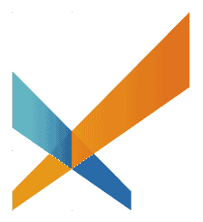

AI 規模化 × DreamMore 真人深度陪伴
用一個公益試點，驗證下一代探索陪伴的新模型

從來沒有機會接觸物理，
他也許只會被看見是一位普通的專利局職員。
從來沒有接觸電腦、設計與創作，
他也許只是一個不適應傳統教育體制的叛逆學生。
在台灣，有多少人是這樣錯過自己的天賦的呢？
在台灣，學生沒有做足夠多的生涯探索，
來找到適合自己的位置的。
真正高品質的生涯探索，需要深度個人化、長期陪伴與資料高度整合——
這正是真人教練、高品質探索營與 DreamMore 這類公益計畫最擅長的事。但即使做得再好，仍會遇到四個共同限制：
名額有限、成本較高，難以讓每位學生在活動前後都被持續陪伴。
活動結束、mentor 更換時，學生需要自己知道怎麼整理、形成假設、設計行動與復盤。
有些學生還說不清楚迷惘，也不一定敢開口；AI 可以先低門檻承接，等學生準備好再接上真人。
測驗、任務、反思與對談紀錄分散各處；換 mentor、換老師、跨梯次就容易打掉重練。
本提案要做的，是讓學生逐步學會使用探索工具：
缺的不是更多單點資源，
而是一套低成本、可長期、能累積資料，並在關鍵時刻接上真人的探索系統。
讓學生在活動前後都能持續探索，讓 mentor 不必重頭蒐集資料，而是把時間留給真正需要人的深度判斷與情緒支持。
AI 負責把探索系統化；DreamMore 負責把學生真正接住。
AI × DreamMore＝規模化的探索支持＋有溫度的深度陪伴——
AI 補上規模化的三個缺口，讓 mentor 的時間留給最珍貴的事：
生涯 × 教育 × 系統 × 實戰 ——
不是從零提出一個 AI 概念，而是把已驗證的方法做成系統、落地執行。
對象：10–20 位學生與 mentor／老師
對象：約 100–300 位學生
對象：更多高中與公益教育場域
均一處理的是「學科學習不該因出身而受限」；
這套系統處理的是「探索自己與未來，也不該因出身而受限」。
生涯探索也不應只屬於能付費買顧問與營隊的家庭。
學生需要的不只是學習進度，也包括迷惘、經驗、興趣與未來想像的整理。
AI 不只是答案機器，也可以成為學生整理問題、形成假設、設計行動與完成反思的探索工具。
真正的學習者，不只會學科知識，也知道如何認識自己、面對不確定，並持續修正方向。
目前以 Notion 做原型，體驗仍不完整；希望打造高中版 App／Web，降低使用與運行成本，並支援 AI 對話、探索流程、個人檔案與成效研究。
協助接觸 DreamMore 與適合的學生、老師／mentor，共同設計符合現場需求的導入流程。
共同探索教育 AI 從學科學習延伸到自我探索與真人陪伴的可能性，並設計這個試點的教育成效指標。
下一步，想找一個時間，和均一一起把合作模式與分工談清楚。
reset your life, enrich your life
AI 先做：引導提問，整理測驗、經驗、迷惘與初步線索
真人介入：直接閱讀 AI 對話摘要，再深入追問與提供情緒支持
產出：學生狀態摘要與自我理解初稿
AI 先做：提出方向假設、查找對應職缺與科系資訊
真人介入：補上現實經驗與深度追問
產出：探索假設
AI 先做：推薦資源、拆解任務、準備 Coffee Chat 初稿
真人介入：協助處理卡關、害怕、拖延與人際阻力，確認語氣後發送
產出：可執行任務與完成紀錄
AI 先做：整理反思、更新探索檔案（自我線索／探索假設／行動紀錄／反思修正）
真人介入：進一步追問意義、矛盾與下一步選擇
產出：自主探索檔案
對學生：不必每次從零開始，新 mentor 一看就懂
對 mentor：接手就能掌握脈絡，陪伴更聚焦
對系統：探索歷程可長期追蹤、跨場域與跨梯次接續
我會想從公益場域開始驗證，不是因為這套系統不能商業化，而是因為生涯探索一旦只走純商業市場，很容易被付費方的升學焦慮牽引。